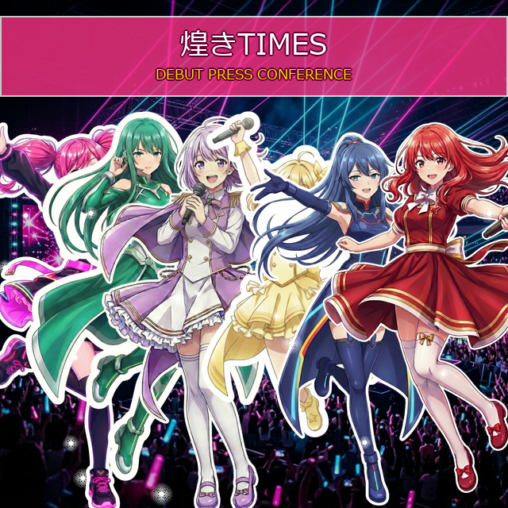

「煌きTIMES」いよいよデビュー決定！会見で意気込みを語る

本日、煌 WORKSプロデュースの新アイドルユニット「煌きTIMES」のデビューが正式に発表されました！
都内で行われたデビュー記者会見では、色とりどりの衣装を身にまとった6人のメンバーが登壇。多くの報道陣のフラッシュを浴びる中、リーダーをはじめ各メンバーがこれからの活動への熱い意気込みと、ファンへの感謝のメッセージを語りました。
「昼は同じ職場で働く私たちですが、ステージでは全く違う輝きを皆さんにお届けしたいです。好きな時間を、ぜひいっしょに過ごしましょう！」と笑顔で語る姿が印象的でした。
今後のライブスケジュールや楽曲リリース情報については、本サイトにて随時更新予定です。6人が作り出すこれからの「新しい時間の過ごし方」にぜひご注目ください！